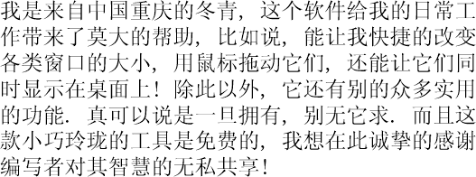

CREDITS
The following is a list (in chronological order) of those who have contributed significant ideas, provided unabashed support or otherwise deserve special recognition. If we have left anyone out, please do not hesitate to let us know. Thanks also for countless feedback from many users not listed here.
- Chris Mallett
- Michael Niemetz
- Terry Welsh
- Stephen Godau
- Stefan Schüßler
- Christian Knorr
- Martin Nitschke
- Manfred Ackermann
- Ralf Schukay
- Holger Hoderlein
- Ronald Ilenborg
- Christian Studer
- Daniel Stephan
- Carsten Ringe
- Katja Helfers
USER COMMENTS
We appreciate any further comments by email (multilingual comments are strongly encouraged too). They will be added here in regular intervals.
"Thanks for this great software. Lots of extremely useful stuff packed into one small tool. The smartest feature must be the easy resizing of windows using the right mouse button. It is so much easier than hitting and dragging the small corners of a window. I also enjoyed exploring all the other nice features of this tool. Keep up the good work."
"NiftyWindows is a great tool, I cannot work without it anymore. If you still do not have a 5-button mouse this tool is the best motivation to buy one. First you have never missed any certain improvements but after you enjoy all the features of NiftyWindows you cannot live without it."
"I've looked for a tool, that can make windows transparent and let them stay always on top for such a long time. NiftyWindows offers much more than only these features. I do really enjoy all the other improvements like the alternative to ALT+TAB or closing windows by performing a special click action inside the window bounds."
"Gerade die Kleinigkeiten, die NiftyWindows bietet, machen dieses Tool für einen Systemadministrator zu einem echten Helferlein. Zum Beispiel schafft das Aufrollen der Windows Ordnung und das AlwaysOnTop für jedes (gewünschte) Window stellt sicher das man keine relevante Information verpasst. Und dezent verhält sich NiftyWindows auch noch... man schaltet halt die MouseHooks aus, welche man nicht möchte."

"I only need a few features of NiftyWindows, but these are very powerful and useful: The quick one-hand task switcher with right mouse button and wheel. There is no faster way to switch from Word to InDesign then to PhotoShop. This is a must-have.
When publishing in the web I often need to see, how my pages look in different resolutions. Alt+NumAdd/NumSub changes the size of the selected window in steps of the standard screen resolutions. Very simple but efficient."
"Jo mei, des is jo a schenes Programmerl, wos Ihr do bastlt hobts, is gaunz praktisch, kauni nur weiterempföhn. Mei tägliche orbeit geht vü schnölla von da Haund, seitdem I des Teil do benutz."
"Very useful software - I wonder, how I ever could work without it in the past."
"C'est un petit chef d'oeuvre, un petit outil plein des merveilles cachés. Quand t'es habitué de t'en servir,tu ne peut plus t'en priver. Bravo et merci."